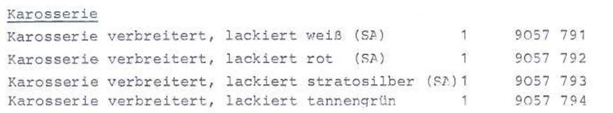
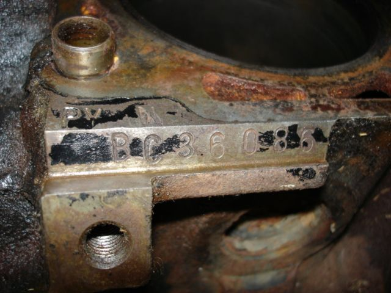

Die tatsächliche Produktionszahl des Ford Capri Werksturbo ist bis heute nicht eindeutig belegt. In vielen Veröffentlichungen wird von rund 200 Fahrzeugen gesprochen, eine offizielle Bestätigung von Ford existiert jedoch nicht. Im Werksturbo Register konnten bislang 122 unterschiedliche Fahrzeuge eindeutig dokumentiert werden. Diese Zahl wächst durch neue Erkenntnisse kontinuierlich weiter.
Nach heutigem Kenntnisstand wurden die Werksturbo-Fahrzeuge offiziell nicht fortlaufend nummeriert. Dennoch finden sich auf vielen Fahrzeugen Zahlenkombinationen auf dem Kardantunnel, die auf ein internes Kennzeichnungssystem hindeuten könnten. Besonders bei später produzierten Fahrzeugen treten diese Nummern regelmäßig auf. Welche Bedeutung sie tatsächlich haben, ist bislang nicht abschließend geklärt.
Hier am Beispiel: 077 - 232
Ein weiteres gefundenes Beispiel wäre 091 - 246

Der Ford Capri Werksturbo wurde ab Werk in vier bekannten Lackfarben ausgeliefert. Im Register sind darüber hinaus Hinweise auf weitere Farbvarianten dokumentiert, deren Herkunft bislang nicht eindeutig geklärt werden konnte. Hier findest Du eine Übersicht aller bekannten Farben und den aktuellen Forschungsstand.

Der Motorcode PYN ist in Fahrtrichtung links vorne oberhalb der Motorseriennummer eingeschlagen. Bei Werksauslieferung entsprach die Motornummer der Fahrgestellnummer.
{kind=link}
{kind=link}
{kind=link}